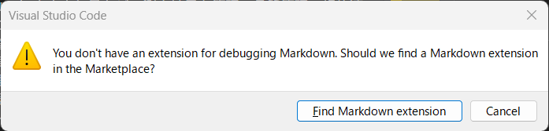
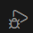

頑張らないために頑張る
ゆるく頑張ります
GitHubからcloneしたリポジトリがVSCodeで動かない？launch.jsonが原因かも
概要
GitHubから面白そうなプロジェクトを見つけてcloneし、Visual Studio Code（以下、VSCode）で開いて実行しようとした瞬間、エラーがでてきたことがあります。

上記のメッセージはMarkdownをデバッグしようとしています（何しようとしてるのよ）が、PythonやC#でも似たようなエラーメッセージが出たことがあります。これについては、言語に対応する拡張機能をインストールしていたとしても同様に、エラーメッセージが出現してきます。許さん。
結論から言うと、「実行に必要なファイルlaunch.jsonが存在しないから実行できないぜ！」なのです。
なぜ launch.json が無いの？
GitHubなどで公開されているリポジトリには、通常 launch.json ファイルが含まれていません。launch.json というのは、VSCodeが「このプロジェクトをどうやって実行・デバッグすればいいか」を理解するための設定ファイルです。実行のためのガイドのようなものです。例えば、「Pythonのこのファイル（main.py）を実行してね」とか、「C#のこのプロジェクトをビルドしてデバッグしてね」といった具体的な指示が書かれています。
このファイルは、開発者個人の環境（ローカルPCのどこにファイルがあるか、など）に依存する設定を含むことが多いため、リポジトリに含めない（.gitignore で除外する）のが一般的です。つまり、cloneしてきたばかりの状態は、VSCodeから見れば「ファイルはたくさんあるけど、ガイドがないからどれをどう実行すればいいか分からんよ！」という状態なんです。
launch.json を作成しよう
解決策は至ってシンプル。「どう実行すればいいか」をVSCodeに教えてあげるために、launch.json を作成すればOKです。つまり、「ないなら作ればいいじゃない」です。
作成方法には、VSCodeの機能を活用する方法と、手動で作る方法があります。
VSCodeの機能で自動生成する (推奨)
一番簡単でオススメな方法です。
- VSCodeの左側にあるアクティビティバーから、「実行とデバッグ」のアイコン（虫のマーク）をクリックします。

- 「実行とデバッグ」ビューが開きます。もし
launch.jsonがまだ存在しない場合、「launch.jsonファイルを作成します（create a launch.json file.）」という青いリンクやテキストが表示されているはずです。

- これをクリックすると、VSCodeがプロジェクトの中身をスキャンして「これはPythonプロジェクトっぽいですね？」とか「Node.jsですか？」といった感じで、デバッグ環境の候補（デバッガ）をいくつか提示してくれます。

- 自分のプロジェクトに合った環境（例えば
Python Fileや.NET Core Launchなど）を選択します。
たったこれだけで、VSCodeがプロジェクトのルートディレクトリに .vscode というフォルダを自動で作成し、その中に基本的な設定が書き込まれた launch.json ファイルを生成してくれます。
手作業で作成する
もちろん、手作業でファイルを作成することも可能です。
- プロジェクトのルートディレクトリ（
.gitフォルダがある場所）に、.vscodeという名前のフォルダを作成します。もし既にあれば、この作業はスキップできます。 - 作成した
.vscodeフォルダの中に、launch.jsonという名前のファイルを新規作成します。 launch.jsonファイルを開き、JSON形式で設定を記述します。
例えば、最低限の構成はこんな感じです（内容はダミーです）：
{
"version": "0.2.0",
"configurations": [
{
"name": "（ここに実行構成の名前）", // 例: "Run Python File"
"type": "（ここにデバッガの種類）", // 例: "python", "coreclr"
"request": "launch",
"program": "（ここに実行したいファイルへのパス）" // 例: "${workspaceFolder}/src/main.py"
}
]
}ただし、type や program に何を書くべきかは、プロジェクトの言語や構成によって全く異なります。手作業で作る場合も、まずはVSCodeの自動生成機能（上記1）を使ってテンプレートを作ってもらい、それを編集していくのが現実的でしょう。
生成された launch.json は「編集」が必要！
VSCodeが launch.json を自動生成してくれた・・・けど、まだまだデバッグはできません。なぜなら、VSCodeが生成するのは、あくまで「一般的なテンプレート」です。あなたのプロジェクトの構造に合わせて、中身を正しく編集してあげる必要があります。
一番よくある編集箇所は、configurations の中にある program という項目です。
// ... (前略) ...
"configurations": [
{
"name": "Python: Current File",
"type": "python",
"request": "launch",
"program": "${file}", // ← これだと現在開いているファイルを実行しようとする
"console": "integratedTerminal"
}
]例えば、Pythonのテンプレートだと program が "${file}" （現在アクティブなファイル）になっていることが多いです。でも、あなたが実行したいのは、プロジェクトの特定のエントリーポイント（例えば src/app.py）かもしれません。その場合は、ここを以下のように書き換える必要があります。
// ... (前略) ...
"program": "${workspaceFolder}/src/app.py", // ← 実行したいファイルを明示
// ... (後略) ...なお、${workspaceFolder} は、VSCodeで開いているプロジェクトのルートディレクトリを指す便利な変数です。
C# (.NET Core) なら program にビルドされたDLLのパスを指定したり、Node.jsなら program に index.js を指定したり、といった具合です。ここが一番大事なところかもしれません。VSCodeが生成した launch.json を開き、自分のプロジェクトの構造と照らし合わせて、実行したいファイルやプロジェクトのパスが正しく指定されているかを必ず確認、修正してください。
まとめ
GitHubからcloneしたプロジェクトがVSCodeで動かない時、まずは launch.json を疑ってみましょう。
- VSCodeの「実行とデバッグ」ビューから
launch.jsonを自動生成する。- 生成された
launch.jsonを開き、programなどの設定が自分のプロジェクト構成（実行したいファイルのパスなど）と合っているか確認・修正する。
launch.json は、VSCodeという高機能なツールに「どう動けばいいか」を教えるためのガイドです。一度設定してしまえば、次からはF5キー（または「実行とデバッグ」の開始ボタン）を押すだけで、デバッグが実行できるようになります。
これで、GitHubで見つけた素敵なプロジェクトも、すぐにローカルで動かせるようになるはずです。ぜひ試してみてくださいね。